CHEMISTRY I: ATOMS AND MOLECULES
Table of Contents
Learning Objectives |
Terms | Review
Questions | Links
Most of the Universe consists of matter
and energy.
Energy is the capacity to do work. Matter has mass and occupies
space. All matter is composed of basic elements that cannot be broken
down to substances with different chemical or physical properties.
Elements
are substances consisting of one type of atom,
for example Carbon atoms make up diamond, and also graphite. Pure
(24K) gold is composed of only one type of atom, gold atoms. Atoms
are the smallest particle into which an element can be divided. The
ancient Greek philosophers developed the concept of the atom,
although they considered it the fundamental particle that could not
be broken down. Since the work of Enrico
Fermi and his colleagues, we now know that
the atom is divisible, often releasing tremendous energies as
in nuclear explosions or (in a controlled fashion in) thermonuclear
power plants.
Subatomic particles were discovered during the
1800s. For our purposes we will concentrate only on three of them,
summarized in Table 1. The proton
is located in the center (or nucleus)
of an atom, each atom has at least one proton. Protons have a charge
of +1, and a mass of approximately 1 atomic mass unit (amu). Elements
differ from each other in the number of protons they have, e.g.
Hydrogen has 1 proton; Helium has 2.
The neutron
also is located in the atomic nucleus (except in Hydrogen). The
neutron has no charge, and a mass of slightly over 1 amu. Some
scientists propose the neutron is made up of a proton and
electron-like particle.
The electron
is a very small particle located outside the nucleus. Because they
move at speeds near the speed of light the precise location of
electrons is hard to pin down. Electrons occupy orbitals, or areas
where they have a high statistical probability of occurring. The
charge on an electron is -1. Its mass is negligible (approximately
1800 electrons are needed to equal the mass of one
proton).
Table 1. Subatomic particles of use in
biology.
|
Name
|
Charge
|
Location
|
Mass
|
|
Proton
|
+1
|
atomic nucleus
|
1.6726 X 10-27 kg
|
|
Neutron
|
0
|
atomic nucleus
|
1.6750 X 10-27 kg
|
|
Electron
|
-1
|
electron orbital
|
9.1095 X 10-31 kg
|
The atomic
number is the number of protons an atom
has. It is characteristic and unique for each element. The
atomic
mass (also referred to as the atomic
weight) is the number of protons and neutrons in an atom. Atoms of an
element that have differing numbers of neutrons (but a constant
atomic number) are termed isotopes.
Isotopes, shown in Figure 1 and Figure 2, can be used to determine
the diet of ancient peoples by determining proportions of isotopes in
mummified or fossilized human tissues. Biochemical pathways can be
deciphered by using isotopic tracers. The age of fossils and
artifacts can be determined by using radioactive isotopes, either
directly on the fossil (if it is young enough) or on the rocks that
surround the fossil (for older fossils like dinosaurs). Isotopes are
also the source of radiation used in medical diagnostic and treatment
procedures.
|
Figure 1. Note that each of these
isotopes of hydrogen has only one proton. Isotopes differ
from each other in the number of neutrons, not in the number
of protons. Image from Purves et al.,
Life: The Science of Biology, 4th Edition, by Sinauer
Associates (www.sinauer.com)
and WH Freeman (www.whfreeman.com),
used with permission.
|
|
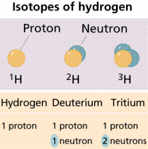
|
Some isotopes are radioisotopes, which
spontaneously decay, releasing radioactivity.
Other isotopes are stable. Examples of radioisotopes are Carbon-14
(symbol 14C), and deuterium (also known as Hydrogen-2;
2H). Stable isotopes are 12C and 1H.
|
Figure 2. Carbon has three isotopes, of
which carbon-12 and carbon-14 are the most well known. Image
from Purves et al., Life: The Science of Biology, 4th
Edition, by Sinauer Associates (www.sinauer.com)
and WH Freeman (www.whfreeman.com),
used with permission.
|
|
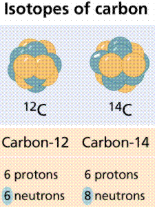
|
The Periodic Table of the Elements, a version of
which is shown in Figure 3, provides a great deal of information
about various elements. An
on-line Periodic Table is available by clicking
here,
|
Figure 3. The Periodic Table of the
Elements. Each Roman numeraled column on the label (at least
the ones ending in A) tells us how many electrons are in the
outer shell of the atom. Each numbered row on the table
tells us how many electron shells an atom has. Thus,
Hydrogen, in column IA, row 1 has one electron in one shell.
Phosphorous in column VA, row 3 has 5 electrons in its outer
shell, and has three shells in total.
Image from James K. Hardy's chemistry site
at the University of Akron.
|
|
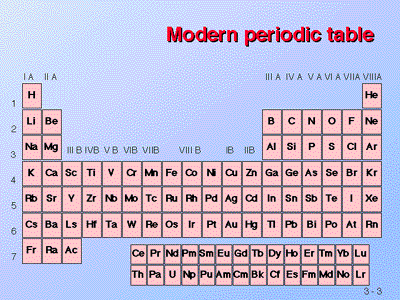
|
Electrons and energy |
Back to Top
Electrons, because they move so fast
(approximately at the speed of light), seem to straddle the fence
separating energy from matter. Albert Einstein developed his famous
E=mc2 equation relating matter and energy over a century
ago. Because of his (and others) work, we think of electrons both as
particles of matter (having mass is a property of matter) and as
units (or quanta) of energy. When subjected to energy, electrons will
acquire some of that energy, as shown in Figure 4.
|
Figure 4. Excitation of an electron by
energy, causing the electron to "jump" to another electron
(energy) level known as the excited state.
Image from Purves et al., Life: The
Science of Biology, 4th Edition, by Sinauer Associates
(www.sinauer.com)
and WH Freeman (www.whfreeman.com),
used with permission.
|
|
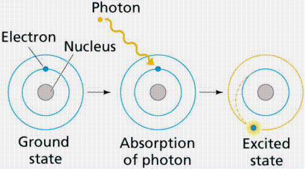
|
An orbital is also an area of space in which an
electron will be found 90% of the time. Orbitals have a variety of
shapes. Each orbital has a characteristic energy state and a
characteristic shape. The s orbital is spherical. Since each
orbital can hold a maximum of two electrons, atomic numbers above 2
must fill the other orbitals. The px,
py, and pz orbitals are dumbbell
shaped, along the x, y, and z axes respectively. These orbital shapes
are shown in Figure 5.
Energy levels (also referred to as electron
shells) are located a certain "distance" from the nucleus. The major
energy levels into which electrons fit, are (from the nucleus
outward) K, L, M, and N. Sometimes these are numbered, with electron
configurations being:
1s22s22p1,
(where the first shell K is indicated with the number 1, the second
shell L with the number 2, etc.). This nomenclature tells us that for
the atom mentioned in this paragraph, the first energy level (shell)
has two electrons in its s orbital (the only orbital it can
have), and second energy level has a maximum of two electrons in its
s orbital, plus one electron in its p orbital.
|
Figure 5. Geometry of orbitals.
S-orbitals are spherical, p-orbitals are shaped like a
dumbbell or figure 8. Image from
Purves et al., Life: The Science of Biology, 4th
Edition, by Sinauer Associates (www.sinauer.com)
and WH Freeman (www.whfreeman.com),
used with permission.
|
|
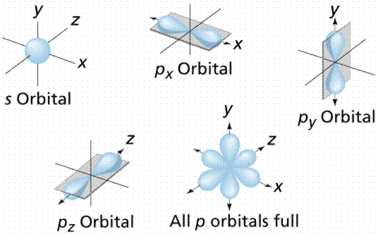
|
During the nineteenth century, chemists arranged
the then-known elements according to chemical bonding, recognizing
that one group (the furthermost right column on the Periodic Table,
referred to as the Inert Gases or Noble Gases) tended to occur in
elemental form (in other words, not in a molecule with other
elements). It was later determined that this group had outer electron
shells containing two (as in the case of Helium) or eight (Neon,
Xenon, Radon, Krypton, etc.) electrons.
As a general rule, for the atoms we are likely to
encounter in biological systems, atoms tend to gain or lose their
outer electrons to achieve a Noble Gas outer electron shell
configuration of two or eight electrons. The number of electrons that
are gained or lost is characteristic for each element, and ultimately
determines the number and types of chemical bonds atoms of that
element can form. Atomic diagrams for several atoms are shown in
Figure 6.
|
Figure 6. Atomic diagrams illustrating
the filling of the outer electron shells. Images from Purves
et al., Life: The Science of Biology, 4th Edition, by
Sinauer Associates (www.sinauer.com)
and WH Freeman (www.whfreeman.com),
used with permission.
|
|
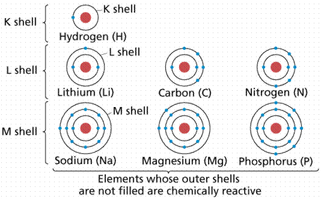
|
|
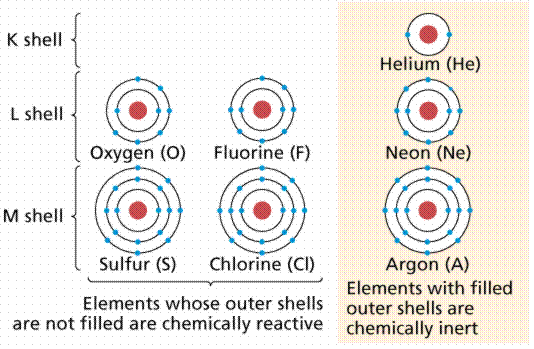
|
Ionic
bonds are formed when atoms become
ions
by gaining or losing electrons. Chlorine is in a group of elements
having seven electrons in their outer shells (see Figure 6). Members
of this group tend to gain one electron, acquiring a charge of -1.
Sodium is in another group with elements having one electron in their
outer shells. Members of this group tend to lose that outer electron,
acquiring a charge of +1. Oppositely charged ions are attracted to
each other, thus Cl- (the symbolic representation of the
chloride ion) and Na+ (the symbol for the sodium ion,
using the Greek word natrium) form an ionic bond, becoming the
molecule sodium chloride, shown in Figure 7. Ionic bonds generally
form between elements in Group I (having one electron in their outer
shell) and Group VIIa (having seven electrons in their outer shell).
Such bonds are relatively weak, and tend to disassociate in water,
producing solutions that have both Na and Cl ions.
|
Figure 7. TOP: Formation of a crystal of
sodium chloride. Each positively charged sodium ion is
surropunded by six negatively charged chloride ions;
likewise each negatively charged chloride ion is surrounded
by six positively charged sodium ions. The overall effect is
electrical neutrality. Image from
Purves et al., Life: The Science of Biology, 4th
Edition, by Sinauer Associates (www.sinauer.com)
and WH Freeman (www.whfreeman.com),
used with permission. BOTTOM: Table Salt Crystal (SEM x625).
This image is copyright Dennis Kunkel at www.DennisKunkel.com,
used with permission.
|
|
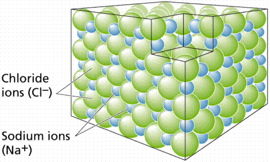
|
|
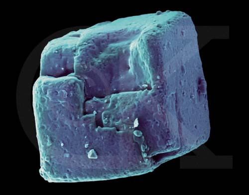
|
Covalent
bonds form when atoms share electrons.
Since electrons move very fast they can be shared, effectively
filling or emptying the outer shells of the atoms involved in the
bond. Such bonds are referred to as electron-sharing bonds. An
analogy can be made to child custody: the children are like
electrons, and tend to spend some time with one parent and the rest
of their time with the other parent. In a covalent bond, the electron
clouds surrounding the atomic nuclei overlap, as shown in Figure 8.
|
Figure 8.
Formation of a covalent bond between two
Hydrogen atoims. Image from Purves et al., Life: The
Science of Biology, 4th Edition, by Sinauer Associates
(www.sinauer.com)
and WH Freeman (www.whfreeman.com),
used with permission.
|
|
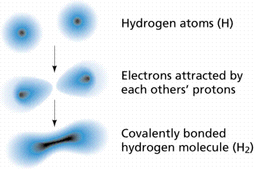
|
Carbon (C) is in Group IVa, meaning it has four
electrons in its outer shell. Thus to become a "happy atom", Carbon
can either gain or lose four electrons. By sharing the
electrons with other atoms, Carbon can become a happy atom,.
alternately filling and emptying its outer shell, as with the four
hydrogens shown in Figure 9.
|
Figure 9.
Formation of covalent bonds in methane.
Carbon needs to share four electrons, in effect it has four
slots. Each hydrogen provides an electron to each of these
slots. At the same time each hydrogen needs to fill one
slot, which is done by sharing an electron with the
carbon. Image from Purves et al.,
Life: The Science of Biology, 4th Edition, by Sinauer
Associates (www.sinauer.com)
and WH Freeman (www.whfreeman.com),
used with permission.
|
|
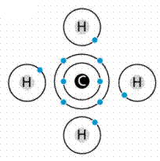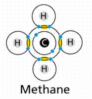
|
The molecule methane (chemical formula
CH4) has four covalent bonds, one between Carbon and each
of the four Hydrogens. Carbon contributes an electron, and Hydrogen
contributes an electron. The sharing of a single electron pair is
termed a single bond. When two pairs of electrons are shared, a
double bond results, as in carbon dioxide. Triple bonds are known,
wherein three pairs (six electrons total) are shared as in acetylene
gas or nitrogen gas. The types of covalent bonds are shown in Figure
10.
|
Figure 10. Ways of representing covalent
bonds. Image from Purves et al.,
Life: The Science of Biology, 4th Edition, by Sinauer
Associates (www.sinauer.com)
and WH Freeman (www.whfreeman.com),
used with permission.
|
|
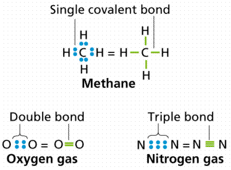
|
Sometimes electrons tend to spend more time with
one atom in the bond than with the other. In such cases a
polar
covalent bond develops. Water
(H2O) is an example. Since the electrons spend so much
time with the oxygen (oxygen having a greater electronegativity, or
electron affinity) that end of the molecule acquires a slightly
negative charge. Conversely, the loss of the electrons from the
hydrogen end leaves a slightly positive charge. The water molecule is
thus polar, having positive and negative sides.
Hydrogen
bonds, as shown in Figure 11, result from
the weak electrical attraction between the positive end of one
molecule and the negative end of another. Individually these bonds
are very weak, although taken in a large enough quantity, the result
is strong enough to hold molecules together or in a three-dimensional
shape.
|
Figure 11. TOP: Formation of a hydrogen
bond between the hydrogen side of one water molecule and the
oxygen side of another water molecule. BOTTOM: The presence
of polar areas in the amino acids that makeup a protein
allows for hydrogen bonds to form, giving the molecule a
three-dimensional shape that is often vital to that
protein's proper functioning.
Images from Purves et al., Life:
The Science of Biology, 4th Edition, by Sinauer
Associates (www.sinauer.com)
and WH Freeman (www.whfreeman.com),
used with permission.
|

|
|
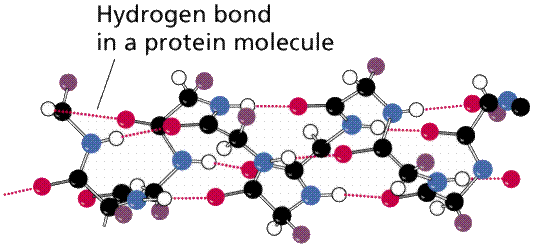
|
Chemical reactions
and molecules | Back to Top
Molecules
are compounds in which the elements are in definite, fixed ratios, as
seen in Figure 12. Those atoms are held together usually by one of
the three types of chemical bonds discussed above. For example:
water, glucose, ATP. Mixtures are compounds with variable
formulas/ratios of their components. For example: soil. Molecular
formulas are an expression in the simplest whole-number terms of the
composition of a substance. For example, the sugar glucose
has 6 Carbons, 12 hydrogens, and 6 oxygens per repeating structural
unit. The formula is written
C6H12O6.
|
Figure 12. Determination of molecular
weights by addition of the weights of the atoms that make up
the molecule. Image from Purves et al., Life: The Science
of Biology, 4th Edition, by Sinauer Associates
(www.sinauer.com)
and WH Freeman (www.whfreeman.com),
used with permission.
|
|
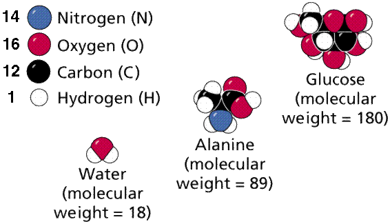
|
Chemical reactions occur in nature, and some also
can be performed in a laboratory setting. One such reaction is
diagrammed in Figure 13. Chemical equations are linear
representations of how these reactions occur. Combination reactions
occur when two separate reactants are bonded together, e.g. A + B
-----> AB. Disassociation reactions occur when a compound is
broken into two products, e.g. AB -----> A + B.
|
Figure 13. Diagram of a chemical
reaction: the combustion of propane with oxygen, resulting
in carbon dioxide, water, and energy (as heat and light).
This chemical reaction takes place in a camping stove as
well as in certain welding torches. Image from Purves et
al., Life: The Science of Biology, 4th Edition, by
Sinauer Associates (www.sinauer.com)
and WH Freeman (www.whfreeman.com),
used with permission.
|
|
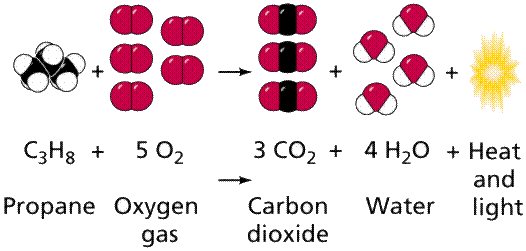
|
Biological systems, while unique to each species,
are based on the chemical bonding properties of carbon. Major organic
chemicals (those associated with or formed by the actions of living
things) usually include some ratios of the following elements: C, H,
N, O, P, S.
- All forms of matter are composed of one or more elements. Be
able to list the major elements in living things.
- Describe how protons, electrons, and neutrons are arranged
into atoms and ions.
- Define the terms atomic number and atomic mass and be able to
describe their sugnificance.
- Atoms with the same atomic number but a different mass number
are isotopes. List the isotopes of hydrogen and of carbon.
- Be able to describe radioisotopes and list three ways they are
used in biology.
- The union between the electron structures of atoms is known as
the chemical bond. Be able to list and describe the three types of
chemical bonds found in living things.
- Be able to describe the distribution of electrons in the space
around the nucleus of an atom.
- An atom tends to react with other atoms when its outermost
shell is only partly filled with electrons. Be able to discuss why
this happens.
- Be able to define the two types of ions and describe thow
ionic bonds form between positive and negative ions.
- In a covalent bond, atoms share electrons. List several
elements that tend to form covalent bonds.
- Distinguish between a nonpolar covalent bond and a polar
covalent bond and give an example of each.
- Define hydrogen bond and describe conditions under which
hydrogen bonds form and cite one example.
- Explain what is meant by the polarity of the water molecule,
and how the polarity of water molecules allows them to interact
with one another.
- Which of these is not a subatomic particle? a) proton; b) ion;
c) neutron; d) electron
- The outermost electron shell of every Noble Gas element
(except Helium) has ___ electrons. a) 1; b) 2; c) 4; d) 6; e)
8
- An organic molecule is likely to contain all of these elements
except ___. a) C; b) H; c) O; d) Ne; e) N
- The chemical bond between water molecules is a ___ bond. a)
ionic; b) polar covalent; c) nonpolar covalent; d) hydrogen
- A solution with a pH of 7 has ___ times more H ions than a
solutrion of pH 9. a) 2; b) 100; c) 1000; d) 9; e) 90
- The type of chemical bond formed when electrons are shared
between atoms is a ___ bond. a) ionic; b) covalent; c)
hydrogen
- The type of chemical bond formed when oppositely charged
particles are attrached to each other is a ___ bond. a) ionic; b)
covalent; c) hydrogen
- Electrons occupy volumes of space known as ___. a) nuclei; b)
periods; c) wavelengths; d) orbitals
- Carbon has an atomic number of 6. This means it has ___. a)
six protons; b) six neutrons; c) six protons plus six neutrons; d)
six neuitrons and six electrons
- Each of the isotopes of hydrogen has ___ proton(s). a) 3; b)
1; c) 2; d) 92; e) 1/2
- A molecule is ___. a) a mixture of various components that can
vary; b) a combination of many atoms that will have different
ratios; c) a combination of one or more atoms that will have a
fixed ratio of its components; d) more important in a chemistry
class than in a biology class
- Chemicool
A colorful and easy to use Periodic Table. More information
about elements than most of us would want.
- WebElements
Much more detailed Periodic Table. Even more information about
those pesky elements! If this site is busy there are a series of
mirror
sites.
- The
Periodic Table This site, developed by the Fossil Company,
provides a version of the Periodic Table where moving the mouse
cursor over an element on the table brings up information about
electron shells, mass, etc. A very nice site.
- James K.
Hardy's Chemistry Site (U of Akron). Powerpoint slides (that
run over the Web) and a series of animations...a must see!
- Diamond
Images of diamond and graphite crystal structure.
Text ©1992, 1994, 1997, 1998, 1999, 2000, 2001, 2002, 2007, by
M.J. Farabee, all rights reserved. Use for educational purposes is
encouraged.
Back to Table of Contents
| Continue with Chem-2
Email: mj.farabee@emcmail.maricopa.edu
Last modified:
The URL of this page is: